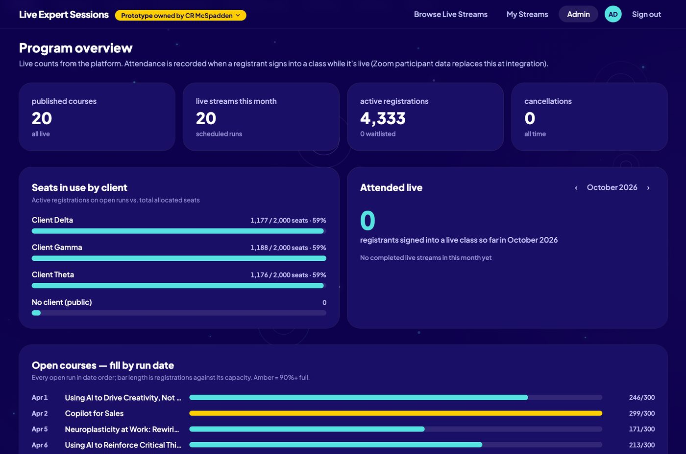

Virtual Education Streaming Platform
As learners modernize, so must the systems upon which we rely. After evaluating the off-the-shelf LMS platforms that make up the industry standard, I developed a commercial-grade tool matched to the learning landscape and built to spec for webinar-agnostic streaming of instructional content across Zoom, Webex, Microsoft Teams and Adobe Connect. The result is a comprehensive digital learning environment prototype with a consumer-grade front end, unified single sign-on across roles, zero-friction navigation, integrated performance tracking, and personal learning portfolio management for admins, learners, and instructors alike.